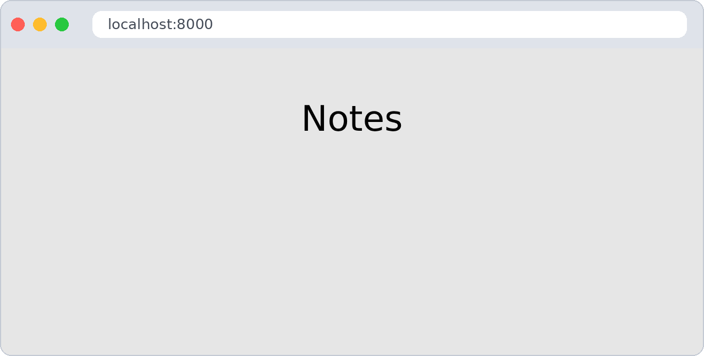
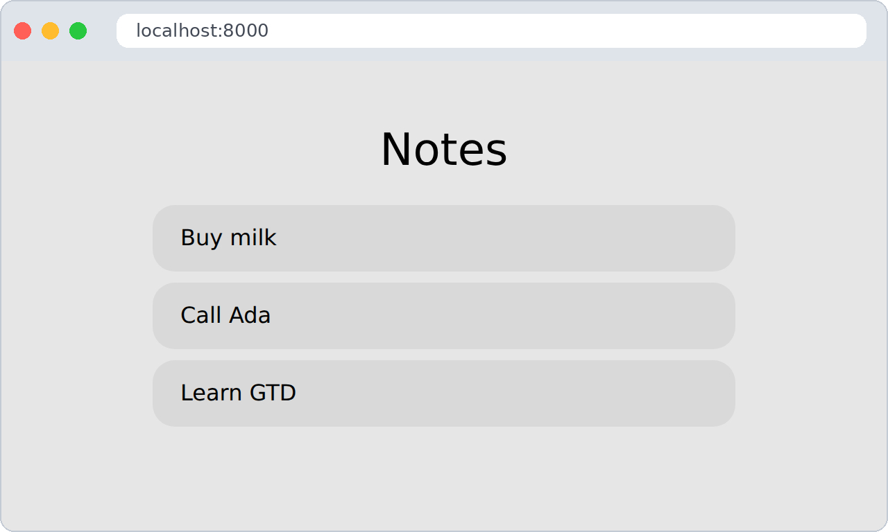
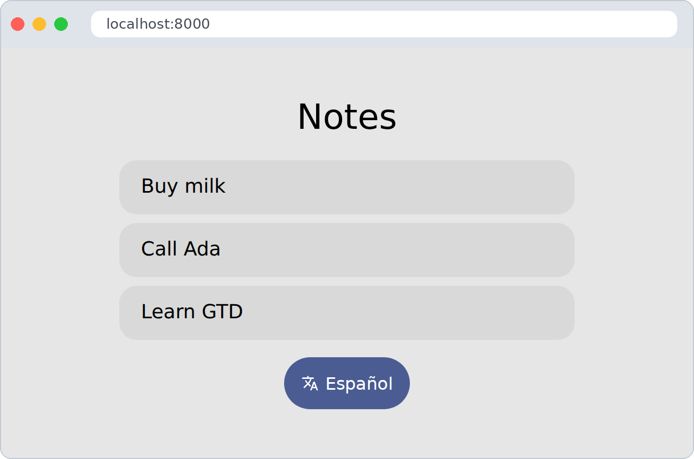
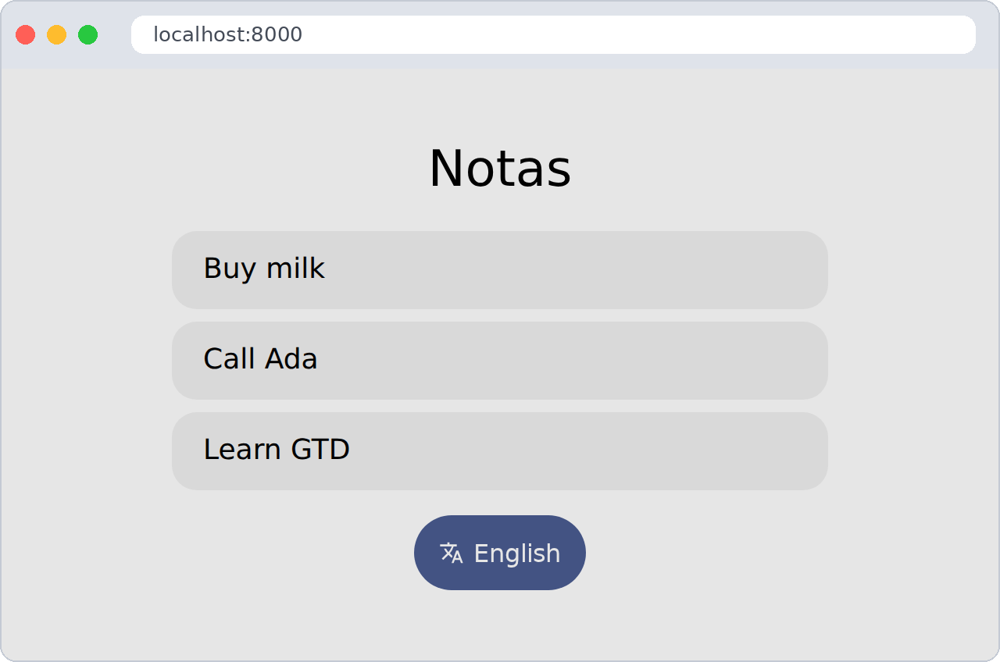
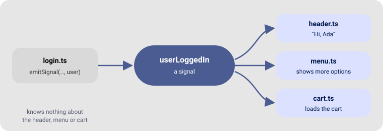

In this tour we build Notes, a tiny app that lists notes, opens one, speaks English and Spanish, remembers your language and draws icons. Each step adds one module and links to its guide, so you can stop at any step and still have a working app.
It needs no real server: the “API” is a JSON file in the project.
Start from the project you made in Getting started. Keep these two running in two terminals, and reload the browser after each step:
> ./bin/esbuild src/main.ts --bundle --format=esm --outfile=out/main.js --watch > python3 -m http.server 8000 > ``` ## The files we will end withmy-app/ ├── index.html ├── config.json ← step 2 ├── api/notes.json ← step 3 ├── resources/ │ ├── i18n/en/notes.json ← step 4 │ ├── i18n/es/notes.json ← step 4 │ └── icons.json ← step 5 └── src/
├── gtd/ └── main.ts ← every step## Step 1 — Pages (`dom` + `router`) Replace `src/main.ts` with a home page and a page for one note: ```ts import { uiComponent } from "./gtd/dom.js" import { setRoute, showRoute } from "./gtd/router.js" const app = document.getElementById("app") setRoute("/", async (_, container) => { container.append(uiComponent({ type: "h1", text: "Notes" })) }) setRoute("/note/$", async ([id], container) => { container.append(uiComponent({ type: "h1", text: `Note ${id}` })) }) const navigate = () => showRoute(location.hash.slice(1) || "/", app) window.addEventListener("hashchange", navigate) navigate()
✅ Check: http://localhost:8000 shows Notes; #/note/3 shows Note 3.

📖 Building the interface · Views and routing
configuration)Create config.json next to index.html:
{ "api": "./api", "lang": "en" }
At the top of src/main.ts, after the imports:
import { loadConfiguration, getConfiguration } from "./gtd/configuration.js"
// Load the defaults only the first time, so user changes are kept
if (undefined == getConfiguration("api"))
await loadConfiguration("./config.json")
Also open src/gtd/configuration.ts and change configurationId to "notes": it is the name
under which your settings are saved in the browser.
✅ Check: in the browser console, localStorage.notes prints {"api":"./api","lang":"en"}.
http)Create api/notes.json:
[
{ "id": "1", "text": "Buy milk" },
{ "id": "2", "text": "Call Ada" },
{ "id": "3", "text": "Learn GTD" }
]
Load it once, and draw each note as a card on the home page. A card is a link with Bubble’s
surface-1 class, which gives it a soft background and rounded corners:
import { httpGet } from "./gtd/http.js"
import { BubbleUI } from "./gtd/bubble.js"
type Note = { id: string, text: string }
const response = await httpGet({ url: `${getConfiguration("api")}/notes.json`, parameters: {} })
const notes: Note[] = await response.json()
setRoute("/", async (_, container) => {
container.append(uiComponent({ type: "h1", text: "Notes" }))
for (const note of notes) {
container.append(uiComponent({
type: "a",
text: note.text,
classes: ["note", BubbleUI.Surface1],
attributes: { href: `#/note/${note.id}` },
}))
}
})
setRoute("/note/$", async ([id], container) => {
const note = notes.find(n => n.id == id)
container.append(uiComponent({ type: "h1", text: note ? note.text : "No such note" }))
})
Give the cards some room in index.html’s <style>:
.note { width: 100%; max-width: 420px; padding: 1rem 1.25rem; color: inherit; }
✅ Check: the home page shows three cards, and each opens its note.

i18n)Create resources/i18n/en/notes.json and resources/i18n/es/notes.json:
{ "title": "Notes", "missing": "No such note", "switch": "Español" }
{ "title": "Notas", "missing": "No existe esa nota", "switch": "English" }
Load the texts in the language from the configuration, and use getText instead of the English
words:
import { setCurrentLanguage, loadTextBundle, getText } from "./gtd/i18n.js"
await setCurrentLanguage(getConfiguration("lang"))
await loadTextBundle("notes")
container.append(uiComponent({ type: "h1", text: getText("notes", "title") }))
English, Spanish, Galician and Catalan are ready to use; other languages are added in i18n.ts.
✅ Check: in the console run localStorage.notes = '{"api":"./api","lang":"es"}' and reload:
the title is now Notas.
icons, events)Create resources/icons.json with one icon:
{ "translate": "<path d=\"M12.9 15.1 10.4 12.6v-.1A17 17 0 0 0 14 6h3V4h-7V2H8v2H1v2h11.2A16 16 0 0 1 9 11.4 16 16 0 0 1 6.7 8h-2a18 18 0 0 0 3 4.6L2.6 17.6 4 19l5-5 3.1 3.1zM18.5 10h-2L12 22h2l1.1-3h4.8l1.1 3h2zm-2.6 7 1.6-4.3 1.6 4.3z\"/>" }
Add a button on the home page that switches language and draws the page again:
import { setConfiguration } from "./gtd/configuration.js"
import { setDomEvents } from "./gtd/dom.js"
import { loadIcons, getIcon } from "./gtd/icons.js"
await loadIcons("app", "./resources/icons.json")
const switchButton = uiComponent({
type: "button",
text: getText("notes", "switch"),
classes: [BubbleUI.Primary, BubbleUI.BoxYCenter], // blue, and icon and text side by side
styles: { gap: "6px" },
})
switchButton.prepend(getIcon("app", "translate", "16px", "currentColor"))
setDomEvents(switchButton, {
click: async () => {
const lang = "es" == getConfiguration("lang") ? "en" : "es"
setConfiguration("lang", lang)
await setCurrentLanguage(lang, true) // true: reload the loaded bundles
navigate() // draw the page again
},
})
container.append(switchButton)
✅ Check: the button flips the whole page between English and Spanish, and the choice survives a reload.
| English | Español |
|---|---|
 |
 |
📖 Icons · Configuration
signals)
Say we want a counter in the page title of how many times the language changed, without the button knowing about the title. Create a signal, connect the title to it, and emit it from the button:
import { setSignal, connectToSignal, emitSignal } from "./gtd/signals.js"
const languageChanged = setSignal()
let changes = 0
connectToSignal(languageChanged, async lang => {
changes++
document.title = `Notes (${lang}, ${changes} changes)`
})
// inside the click handler, after setCurrentLanguage
await emitSignal(languageChanged, lang)
✅ Check: the browser tab title updates each time you press the button.
📖 Signals
display)import { checkDisplayType } from "./gtd/display.js"
checkDisplayType() // <html data-display="mobile"> or "desktop"
window.addEventListener("resize", checkDisplayType)
Now plain CSS can adapt the app:
[data-display="mobile"] body { font-size: 18px; }
✅ Check: open the developer tools’ device mode: the text gets bigger on a phone.
shortcuts)Press Ctrl + H anywhere to go home:
import Shortcuts, { KeyInteraction } from "./gtd/shortcuts.js"
const keys = Shortcuts.register(document)
Shortcuts.set(keys, {
interaction: KeyInteraction.keyDown,
key: "h",
ctrlKey: true,
preventDefault: true,
callback: () => location.hash = "/",
})
✅ Check: open a note and press Ctrl + H.
You used every GTD module, and you can read every line of your app. Some ideas to keep going:
setConfiguration("notes", JSON.stringify(notes)).api/notes.json with a real API and use httpPost — see Talking to a server.